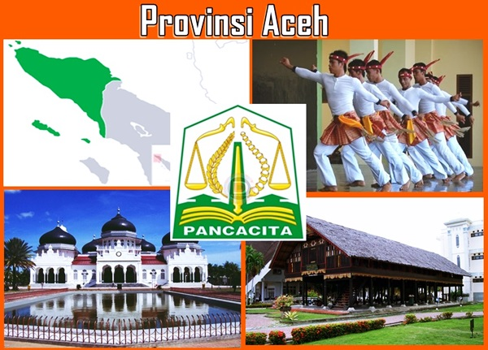

Aceh merupakan salah satu provinsi di Indonesia yang terletak di ujung barat Pulau Sumatera.
Aceh dikenal sebagai Serambi Mekkah karena menjadi daerah pertama masuknya Islam di Indonesia.
Provinsi ini memiliki kekayaan budaya, sejarah, wisata alam, dan kuliner yang menarik untuk dikunjungi.